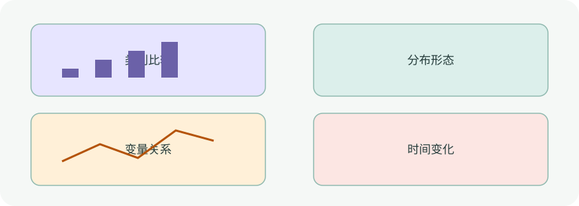

一张图可以让数据关系一目了然，也可以通过截断坐标轴、错误比例或不恰当的图形把读者带向错误结论。图表不是装饰，它是一种统计表达；首先要明确你希望读者比较什么。
在开始任何统计分析之前，我做的第一件事永远是画图。因为图形能揭示数字无法表达的信息：异常值、分布形态、聚类结构、非线性关系……这些东西如果只盯着summary statistics看，你可能会完全错过。这一章，我们来系统学习数据可视化的核心图表类型和它们的使用原则。

5.1 图表选择的原则：Anscombe四重奏
1973年，统计学家Francis Anscombe构造了四组数据，后来被称为Anscombe四重奏。这四组数据有完全相同的均值、方差、相关系数和线性回归线——但它们的散点图截然不同。
| 统计量 | 数据集1 | 数据集2 | 数据集3 | 数据集4 |
|---|---|---|---|---|
| x的均值 | 9.0 | 9.0 | 9.0 | 9.0 |
| y的均值 | 7.5 | 7.5 | 7.5 | 7.5 |
| 相关系数 | 0.816 | 0.816 | 0.816 | 0.816 |
| 回归线 | y=0.5x+3 | y=0.5x+3 | y=0.5x+3 | y=0.5x+3 |
import matplotlib.pyplot as plt
import seaborn as sns
import numpy as np
# Anscombe四重奏数据
anscombe = sns.load_dataset("anscombe")
# 四组数据的散点图 + 回归线
datasets = anscombe['dataset'].unique()
fig, axes = plt.subplots(2, 2, figsize=(10, 8))
for i, dataset in enumerate(datasets):
data = anscombe[anscombe['dataset'] == dataset]
ax = axes[i // 2, i % 2]
ax.scatter(data['x'], data['y'], s=50, alpha=0.8)
# 回归线
m, b = np.polyfit(data['x'], data['y'], 1)
x_line = np.array([data['x'].min(), data['x'].max()])
ax.plot(x_line, m * x_line + b, 'r--', lw=2)
ax.set_title(f'数据集 {dataset}', fontsize=14)
ax.set_xlabel('x')
ax.set_ylabel('y')
plt.tight_layout()
plt.show()第一组是典型的线性关系；第二组是曲线关系所以线性模型不合适；第三组除了一个异常值外其他点完美对齐；第四组则是一个极端值完全驱动了回归线的方向。这四组数据告诉我们：永远在跑模型之前画图。
📖 Anscombe的启示：数值上的"相等"不代表视觉上的"相同"。这个经典例子告诉我们，描述统计和推断统计都不能代替可视化的角色。用现代的说法：EDA（探索性数据分析）不是统计分析的"前期准备"，它是统计分析的核心组成部分。
5.2 直方图与密度图
直方图（Histogram）是最基础的单变量分布可视化工具。它把数据分成若干个"桶"（bin），每个桶的高度表示落在该区间内的数据点数量（或频率）。
使用直方图时最重要的参数是桶数（bin width）。桶太少会丢失细节，桶太多会出现大量空桶和噪声。经验上可以用"Sturges规则"或"Freedman-Diaconis规则"来确定桶数，但在实际分析中我通常会试3-4个不同的桶数，找一个能展示真实分布形态的。
密度图（Kernel Density Estimation, KDE）是直方图的平滑版本。它用核函数（通常是高斯核）在每个数据点上叠加一个小"山包"，然后平滑出密度曲线。KDE的优势是不受桶数选择的影响，但对带宽参数同样敏感。
import numpy as np
import matplotlib.pyplot as plt
import seaborn as sns
np.random.seed(42)
# 生成不同分布的数据
normal = np.random.normal(50, 15, 500)
skewed = np.random.exponential(30, 500)
bimodal = np.concatenate([
np.random.normal(30, 8, 250),
np.random.normal(70, 8, 250)
])
fig, axes = plt.subplots(1, 3, figsize=(15, 4))
# 直方图 + KDE 叠加
sns.histplot(normal, bins=30, kde=True, ax=axes[0])
axes[0].set_title('正态分布 (直方图+KDE)')
sns.histplot(skewed, bins=30, kde=True, ax=axes[1])
axes[1].set_title('右偏分布 (直方图+KDE)')
sns.histplot(bimodal, bins=30, kde=True, ax=axes[2])
axes[2].set_title('双峰分布 (直方图+KDE)')
plt.tight_layout()
plt.show()5.3 散点图与相关性
散点图是最直观展示两个连续变量关系的方式。每个点代表一个观测，x轴和y轴分别代表两个变量。
看散点图时我关注三个东西：
- 方向：正相关（y随x增加而增加）还是负相关（y随x增加而减少）
- 强度：点聚集在一条"虚拟线"周围的紧密程度
- 形状：是线性关系还是非线性关系（比如U形、指数形）
💡 散点图增强技巧：当数据点很多时（比如上万条），散点图会出现"重叠"问题——多个数据点完全重叠在一起。这时可以：（1）降低透明度（alpha=0.1），重叠越多的区域颜色越深；（2）使用六边形分箱图（hexbin plot）；（3）使用2D密度图。这三种方法都能在大样本场景下展示数据的真实分布密度。
5.4 条形图的正确使用
条形图（Bar Chart）看似简单，但也是最容易被滥用的图表。第一条规则就是：条形图的y轴必须从0开始。
为什么？因为条形图的视觉特征——条形的长度——代表了数值的大小。如果y轴不从0开始，条形的相对长度会被扭曲，导致视觉上的误导。
举个例子：A组的转化率是5%，B组是6%。如果y轴从4%开始到7%结束，A组条形看起来只有B组的一半高，但实际上两组只差1个百分点。这就是典型的截断坐标轴（truncated axis）误导。
| 图表类型 | 适用场景 | 关键注意事项 |
|---|---|---|
| 条形图 | 比较分类变量的数值 | y轴必须从0开始 |
| 折线图 | 展示时间趋势 | y轴可从非零点开始（关注变化） |
| 散点图 | 展示两个连续变量关系 | 注意过度绘制的问题 |
| 直方图 | 展示单变量分布 | 桶数选择至关重要 |
| 箱线图 | 多组分布的比较 | 样本量过小时不太适用 |
5.5 常见可视化误区
我在工作中总结了一些最常见的可视化翻车场景，请大家引以为戒：
- 饼图用太多扇区：超过5个扇区的饼图就基本没法看了。人类的眼睛不善于比较角度差异——如果你的数据类别超过5个，建议改用条形图。
- 3D效果：3D柱状图、3D饼图通常只会让数据更难解读。透视角度的扭曲会导致严重的视觉误差。除非你真的需要展示三维数据结构，否则远离3D。
- 双y轴：在同一张图里用左右两个不同的y轴来展示两组数据，是一种有争议的做法。它虽然可以"节省空间"，但也很容易让读者误以为两组数据的变化趋势是直接可比的。
- 颜色滥用：用太多不同颜色、用红绿配色（色盲用户无法区分）、颜色的深浅没有实际意义……这些都是常见问题。
⚠️ 踩坑故事：y轴不归零
2019年，某知名财经媒体发布了一张标题为"某公司营收爆发式增长"的条形图。从图上看，2020年的条形差不多是2019年的3倍高，视觉冲击力极强。但仔细一看——y轴的范围是从95亿到100亿，而不是从0开始。实际上营收只从97亿增长到了99亿，涨幅约2%。
这是"截断坐标轴"的经典案例。虽然折线图可以从非零点开始（因为折线图展示的是趋势而非比例比较），但条形图必须严格遵守从0开始的原则。很多数据新闻网站（特别是政治倾向明显的媒体）经常用这种技巧来放大差异。
这个案例给我的教训是：当你看到一个引人注目的图表时，第一件事不是看标题，而是看坐标轴的刻度。同样，作为分析师，画出准确的图表比画出"好看"的图表重要得多。
💡 可视化工具推荐：Python生态中最常用的可视化库是matplotlib（底层控制力强）和seaborn（统计图表更便捷）。对于交互式探索，plotly和bokeh是不错的选择。建议新手从seaborn入门——它的默认主题已经很漂亮，而且内部的"统计思维"（自动分组、聚合、置信区间）非常符合数据分析的工作流。
可视化是数据科学家的"眼睛"。学会了如何正确地观察数据，你才能发现那些隐藏在数字背后的模式和异常。下一章，我们将离开描述统计的世界，进入概率基础——统计学的理论基石。我们将学习概率的基本法则、条件概率、以及那个让人又爱又怕的贝叶斯公式。
给问题选择图表
选择分析目标，看看哪种图表更适合先行探索。
教学模拟：用于理解概念与方向，不替代真实数据分析、正式功效计算或研究设计审查。
TAKEAWAYS
本章要记住的三件事
- 类别比较常用条形图；数值分布常用直方图或箱线图。
- 两个数值变量的关系优先用散点图，不要只看相关系数。
- 图表必须标清单位、样本范围、坐标轴与数据来源。
FURTHER READING
延伸阅读与核对来源
参考来源用于核对概念与方法。涉及具体数据、历史细节或行业案例时，应回到原始研究或官方文档逐项核验。